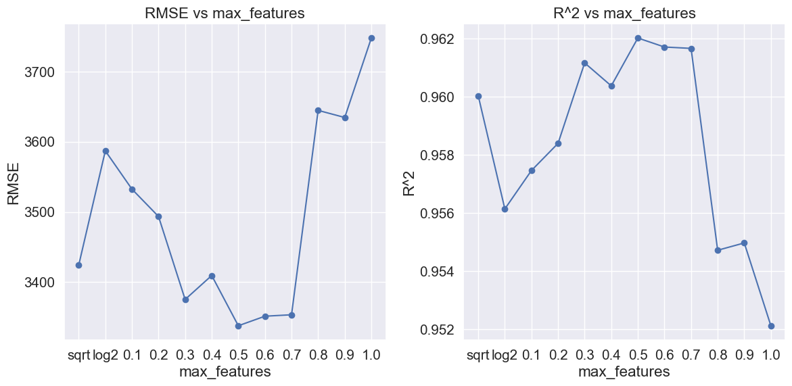
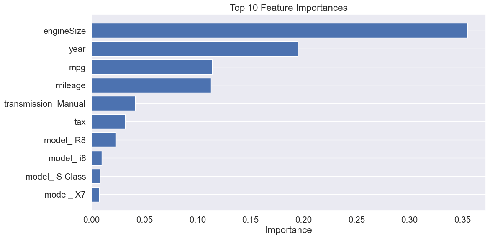

# Importing necessary libraries
import pandas as pd
import numpy as np
import matplotlib.pyplot as plt
import seaborn as sns
sns.set(font_scale=1.35)
# import the decision tree regressor
from sklearn.tree import DecisionTreeRegressor, DecisionTreeClassifier, plot_tree, export_graphviz
from sklearn.ensemble import BaggingRegressor,BaggingClassifier
# split the dataset into training and testing sets
from sklearn.model_selection import train_test_split
from sklearn.model_selection import cross_val_score, GridSearchCV, cross_val_predict, KFold
from sklearn.pipeline import Pipeline
from sklearn.compose import ColumnTransformer
from sklearn.preprocessing import OneHotEncoder, FunctionTransformer
from sklearn.metrics import root_mean_squared_error, r2_score, make_scorer, accuracy_score7 Random Forests
Read section 8.2.2 of the book before using these notes.
Note that in this course, lecture notes are not sufficient, you must read the book for better understanding. Lecture notes are just implementing the concepts of the book on a dataset, but not explaining the concepts elaborately.
7.1 Motivation: Bagging Revisited
In Bagging (Bootstrap Aggregating), we:
Train many trees on different bootstrap samples of the training data.
Aggregate their predictions by averaging (regression) or voting (classification).
✅ Bagging helps reduce variance
⚠️ But if the trees are too similar (i.e., highly correlated), averaging won’t help as much.
# Load the dataset
car = pd.read_csv('Datasets/car.csv')
car.head()| brand | model | year | transmission | mileage | fuelType | tax | mpg | engineSize | price | |
|---|---|---|---|---|---|---|---|---|---|---|
| 0 | vw | Beetle | 2014 | Manual | 55457 | Diesel | 30 | 65.3266 | 1.6 | 7490 |
| 1 | vauxhall | GTC | 2017 | Manual | 15630 | Petrol | 145 | 47.2049 | 1.4 | 10998 |
| 2 | merc | G Class | 2012 | Automatic | 43000 | Diesel | 570 | 25.1172 | 3.0 | 44990 |
| 3 | audi | RS5 | 2019 | Automatic | 10 | Petrol | 145 | 30.5593 | 2.9 | 51990 |
| 4 | merc | X-CLASS | 2018 | Automatic | 14000 | Diesel | 240 | 35.7168 | 2.3 | 28990 |
X = car.drop(columns=['price'])
y = car['price']
X_train, X_test, y_train, y_test = train_test_split(X, y, test_size=0.2, random_state=42)
# extract the categorical columns and put them in a list
categorical_feature = X.select_dtypes(include=['object']).columns.tolist()
# extract the numerical columns and put them in a list
numerical_feature = X.select_dtypes(include=['int64', 'float64']).columns.tolist()preprocessor = ColumnTransformer(
transformers=[
('num', FunctionTransformer(), numerical_feature),
('cat', OneHotEncoder(handle_unknown='ignore'), categorical_feature)
],
remainder='passthrough'
)7.1.1 Let’s build a single decision tree and output its performance
# build a single decsision tree regressor
single_tree_regressor = DecisionTreeRegressor(random_state=0)
# pipeline for the single decision tree regressor
single_tree_pipeline = Pipeline(steps=[
('preprocessor', preprocessor),
('tree', single_tree_regressor)
])
# fit the pipeline to the training data
single_tree_pipeline.fit(X_train, y_train)
# make predictions on the test data
y_pred_single_tree = single_tree_pipeline.predict(X_test)
# calculate the RMSE and R^2 score
rmse_single_tree = root_mean_squared_error(y_test, y_pred_single_tree)
r2_single_tree = r2_score(y_test, y_pred_single_tree)
print(f'Single Tree RMSE: {rmse_single_tree:.2f}')
print(f'Single Tree R^2: {r2_single_tree:.2f}')
# calculate the RMSE and R^2 score for the training data
y_pred_train_single_tree = single_tree_pipeline.predict(X_train)
rmse_train_single_tree = root_mean_squared_error(y_train, y_pred_train_single_tree)
r2_train_single_tree = r2_score(y_train, y_pred_train_single_tree)
print(f'Single Tree Train RMSE: {rmse_train_single_tree:.2f}')
print(f'Single Tree Train R^2: {r2_train_single_tree:.2f}')Single Tree RMSE: 5073.81
Single Tree R^2: 0.91
Single Tree Train RMSE: 0.00
Single Tree Train R^2: 1.00# single tree depth
tree_depth = single_tree_pipeline.named_steps['tree'].get_depth()
print(f"Depth of the single decision tree: {tree_depth}")Depth of the single decision tree: 347.1.2 Let’s Build a Bagging Tree with Bootstrap Sampling to Reduce Variance
By default, bootstrap=True, meaning each training set is created by sampling with replacement from the original dataset.
# bagging with bootstrap
bagging_with_bootstrap_regressor = BaggingRegressor(
estimator=DecisionTreeRegressor(random_state=0),
n_estimators=50,
random_state=42
)
# create a pipeline with the preprocessor and the bagging regressor
bootstrap_bagging_pipeline = Pipeline(steps=[
('preprocessor', preprocessor),
('bagging', bagging_with_bootstrap_regressor)
])
# fit the pipeline to the training data
bootstrap_bagging_pipeline.fit(X_train, y_train)
# make predictions on the test data
y_pred = bootstrap_bagging_pipeline.predict(X_test)
# calculate the RMSE and R^2 score
rmse = root_mean_squared_error(y_test, y_pred)
r2 = r2_score(y_test, y_pred)
print(f'RMSE using bootstraping: {rmse:.2f}')
print(f'R^2 using bootstraping: {r2:.2f}')
# calculate the training rmse and r^2 score
y_train_pred = bootstrap_bagging_pipeline.predict(X_train)
train_rmse = root_mean_squared_error(y_train, y_train_pred)
train_r2 = r2_score(y_train, y_train_pred)
print(f'Training RMSE using bootstraping: {train_rmse:.2f}')
print(f'Training R^2 using bootstraping: {train_r2:.2f}')RMSE using bootstraping: 3756.85
R^2 using bootstraping: 0.95
Training RMSE using bootstraping: 1395.75
Training R^2 using bootstraping: 0.99The test RMSE improved significantly from 5073 to 3756, and the R² score increased from 0.91 to 0.95 after applying bagging.
7.1.3 Let’s Build a Bagging Tree Without Bootstrap Sampling
Now, we’ll turn off bootstrap sampling (bootstrap=False) and observe how it affects the bagging model’s performance.
bagging_without_bootstrap_regressor = BaggingRegressor(
estimator=DecisionTreeRegressor(random_state=0),
bootstrap=False,
n_estimators=50,
random_state=42
)
# create a pipeline with the preprocessor and the bagging regressor
without_bootstrap_bagging_pipeline = Pipeline(steps=[
('preprocessor', preprocessor),
('bagging', bagging_without_bootstrap_regressor)
])
# fit the pipeline to the training data
without_bootstrap_bagging_pipeline.fit(X_train, y_train)
# make predictions on the test data
y_pred = without_bootstrap_bagging_pipeline.predict(X_test)
# calculate the RMSE and R^2 score
rmse = root_mean_squared_error(y_test, y_pred)
r2 = r2_score(y_test, y_pred)
print(f'RMSE without bootstrap sampling: {rmse:.2f}')
print(f'R^2 without bootstrap sampling: {r2:.2f}')
# calculate the training rmse and r^2 score
y_train_pred = without_bootstrap_bagging_pipeline.predict(X_train)
train_rmse = root_mean_squared_error(y_train, y_train_pred)
train_r2 = r2_score(y_train, y_train_pred)
print(f'Training RMSE without bootstrap sampling: {train_rmse:.2f}')
print(f'Training R^2 without bootstrap sampling: {train_r2:.2f}')RMSE: 4667.43
R^2: 0.93
Training RMSE: 0.00
Training R^2: 1.00As observed from the results, the performance of bagging without bootstrap sampling is worse (RMSE: 4667) compared to using bootstrap sampling (RMSE: 3756).
7.1.4 ❓ Why Does Bagging Without Bootstrap Perform Worse?
When bootstrap=True, each tree in the ensemble is trained on a different bootstrap sample — a random sample drawn with replacement from the training data. This process has two key effects:
- It introduces diversity among the individual trees.
- It reduces correlation between trees.
This diversity is the core strength of bagging: even though individual trees may overfit, their errors tend to cancel out when their predictions are averaged, leading to improved generalization.
7.1.5 ❓ Why Can Bagging Without Bootstrap Still Show Slight Improvement?
When bootstrap=False, all trees are trained on the same full dataset, removing the primary source of diversity in bagging. As a result, the variance reduction benefit from averaging is significantly weakened.
However, even when trees are trained on the same data, slight variations can still arise due to internal randomness in how decision trees are constructed. For example:
- When multiple splits yield the same information gain, one split may be selected randomly.
- Ties between split candidates can be broken differently.
- Minor numerical differences can occur due to floating-point operations.
These small variations cause the trees to differ slightly, allowing the ensemble to achieve some variance reduction, which can slightly improve generalization compared to a single decision tree.
⚠️ However, this improvement is typically much smaller than the improvement achieved when using full bootstrap sampling (
bootstrap=True).
7.2 Random Forest
While diversity is the core strength of bagging, Random Forest further improves upon bagging by introducing even more diversity among the individual trees.
The goal of Random Forest is to further decorrelate the trees, which leads to improved generalization and predictive performance.
7.2.1 Idea Behind Random Forest
Random Forest introduces an additional source of randomness:
- At each split in a tree, instead of considering all predictors, Random Forest randomly selects a subset of predictors to evaluate.
This approach:
- Increases diversity among the trees.
- Decreases correlation between trees.
- Further reduces the variance of the aggregated model.
Result: Random Forest generally achieves better performance than standard bagging, especially on high-dimensional datasets.
7.2.2 Key Hyperparameter Comparison
| Hyperparameter | Bagging | Random Forest |
|---|---|---|
bootstrap |
✅ Yes | ✅ Yes |
max_features |
🧩 All features considered at each split | 🧩 Random subset of features at each split |
oob_score |
✅ Often used for evaluation | ✅ Often used for evaluation |
n_estimators |
✅ Number of trees | ✅ Number of trees |
7.2.3 Let’s Build a Random Forest Model Using the Default Settings
The max_features hyperparameter controls the number of features considered when searching for the best split at each node.
By default, max_features=1.0, meaning all features are considered at every split, similar to standard bagging.
from sklearn.ensemble import RandomForestRegressor
rf_regressor = RandomForestRegressor(
n_estimators=50,
random_state=42
)
# create a pipeline with the preprocessor and the bagging regressor
rf_pipeline = Pipeline(steps=[
('preprocessor', preprocessor),
('rf', rf_regressor)
])
# fit the pipeline to the training data
rf_pipeline.fit(X_train, y_train)
# make predictions on the test data
y_pred = rf_pipeline.predict(X_test)
# calculate the RMSE and R^2 score
rmse = root_mean_squared_error(y_test, y_pred)
r2 = r2_score(y_test, y_pred)
print(f'RMSE using random forest: {rmse:.2f}')
print(f'R^2 using random forest: {r2:.2f}')
# calculate the training rmse and r^2 score
y_train_pred = rf_pipeline.predict(X_train)
train_rmse = root_mean_squared_error(y_train, y_train_pred)
train_r2 = r2_score(y_train, y_train_pred)
print(f'Training RMSE using random forest: {train_rmse:.2f}')
print(f'Training R^2 using random forest: {train_r2:.2f}')RMSE: 3747.58
R^2: 0.95
Training RMSE: 1395.03
Training R^2: 0.99This result is close to that of the bagging model with bootstrap sampling (RMSE: 3756 vs. 3747).
To further decorrelate the trees, we can adjust the max_features parameter. Reducing max_features limits the number of features considered at each split, which increases diversity among the trees and helps further reduce variance.
7.2.4 Let’s Build a Random Forest Model with sqrt max_features
There are two common options to reduce the number of features considered at each split: sqrt and log2.
Here, we will set max_features='sqrt' and observe how it affects the model’s performance.
rf_sqrt_regressor = RandomForestRegressor(
n_estimators=50,
max_features='sqrt',
random_state=42
)
# create a pipeline with the preprocessor and the bagging regressor
rf_sqrt_pipeline = Pipeline(steps=[
('preprocessor', preprocessor),
('bagging', rf_sqrt_regressor)
])
# fit the pipeline to the training data
rf_sqrt_pipeline.fit(X_train, y_train)
# make predictions on the test data
y_pred = rf_sqrt_pipeline.predict(X_test)
# calculate the RMSE and R^2 score
rmse = root_mean_squared_error(y_test, y_pred)
r2 = r2_score(y_test, y_pred)
print(f'RMSE: {rmse:.2f}')
print(f'R^2: {r2:.2f}')
# calculate the training rmse and r^2 score
y_train_pred = rf_sqrt_pipeline.predict(X_train)
train_rmse = root_mean_squared_error(y_train, y_train_pred)
train_r2 = r2_score(y_train, y_train_pred)
print(f'Training RMSE: {train_rmse:.2f}')
print(f'Training R^2: {train_r2:.2f}')
RMSE: 3424.28
R^2: 0.96
Training RMSE: 1279.85
Training R^2: 0.99By using sqrt for max_features, we further decorrelate the trees, resulting in a lower RMSE of 3424 compared to 3747 when using all features at each split.
7.3 Let’s Explore How max_features Affects Performance
The max_features parameter controls the degree of feature decorrelation among trees.
Let’s explore different values:
# explore how the max_features parameter affects the model performance
max_features = ['sqrt', 'log2', 0.1, 0.2, 0.3, 0.4, 0.5, 0.6, 0.7, 0.8, 0.9, 1.0]
rmse_list = []
r2_list = []
for max_feature in max_features:
rf_regressor = RandomForestRegressor(
n_estimators=50,
max_features=max_feature,
random_state=42
)
# create a pipeline with the preprocessor and the bagging regressor
rf_pipeline = Pipeline(steps=[
('preprocessor', preprocessor),
('bagging', rf_regressor)
])
# fit the pipeline to the training data
rf_pipeline.fit(X_train, y_train)
# make predictions on the test data
y_pred = rf_pipeline.predict(X_test)
# calculate the RMSE and R^2 score
rmse = root_mean_squared_error(y_test, y_pred)
r2 = r2_score(y_test, y_pred)
rmse_list.append(rmse)
r2_list.append(r2)# plot the RMSE and R^2 score against the max_features parameter
plt.figure(figsize=(12, 6))
plt.subplot(1, 2, 1)
plt.plot(max_features, rmse_list, marker='o')
plt.xlabel('max_features')
plt.ylabel('RMSE')
plt.title('RMSE vs max_features')
plt.grid(True)
plt.subplot(1, 2, 2)
plt.plot(max_features, r2_list, marker='o')
plt.xlabel('max_features')
plt.ylabel('R^2')
plt.title('R^2 vs max_features')
plt.grid(True)
plt.tight_layout()
plt.show()
As observed from the plots, Random Forest performs best when tree decorrelation is balanced.
Setting max_features too low or too high hurts the model’s generalization ability.
- R² peaks when
max_featuresis around 0.5 to 0.6, consistent with the lowest RMSE values. - R² drops at both extremes:
- Using too few features (
sqrt,log2, or very small proportions) leads to underfitting. - Using all features (
max_features=1.0) increases correlation between trees, leading to overfitting.
- Using too few features (
🔑 Key takeaway: Carefully tuning
max_featuresis critical for achieving the best balance between bias and variance in Random Forest models.
Let’s get the minimum RMSE and the corresponding max_features value from the result
min_rmse = min(rmse_list)
min_rmse_index = rmse_list.index(min_rmse)
best_max_feature = max_features[min_rmse_index]
print(f'Minimum RMSE: {min_rmse:.2f}')
print(f'Best max_features: {best_max_feature}')
# get the maximum R^2 and the corresponding max_features parameter
max_r2 = max(r2_list)
max_r2_index = r2_list.index(max_r2)
best_max_feature_r2 = max_features[max_r2_index]
print(f'Maximum R^2: {max_r2:.2f}')
print(f'Best max_features: {best_max_feature_r2}')Minimum RMSE: 3338.02
Best max_features: 0.5
Maximum R^2: 0.96
Best max_features: 0.5Adjusting max_features from ‘sqrt’ to 0.5 led to a slight improvement in RMSE, reducing it from 3424 to 3338
7.4 Other Hyperparameters in Random Forest
7.4.1 Why Bagging Uses Unpruned Trees
- Bagging’s main strength lies in reducing variance, not bias.
- Deep, unpruned decision trees tend to overfit (high variance), but bagging effectively reduces this variance through aggregation.
- Using pruned trees reduces variance but increases bias — and since bagging does not correct bias, this would weaken overall performance.
Therefore, in bagging, it is common to let each tree grow fully to preserve low bias and rely on bagging to reduce variance.
7.4.2 Hyperparameters That Control Tree Complexity in Random Forest
| Setting | Effect | Applies to |
|---|---|---|
max_depth=None |
Full trees, low bias, high variance | Bagging, RF |
max_depth=some int |
Pruned trees, more bias, less variance | Especially helpful in RF |
min_samples_split/leaves |
Prevents small, unreliable branches | Both |
7.4.3 Why Random Forest Often Limits Tree Depth
In Random Forest, only a subset of features is considered at each split.
As a result, fully growing trees without any depth constraint can cause them to overfit to noise within these smaller subsets.
Limiting tree complexity in Random Forest:
- Prevents deep trees from chasing noise and overfitting.
- Improves generalization, especially in high-dimensional or noisy datasets.
- Balances the bias-variance tradeoff more effectively than using full trees.
Careful tuning of tree depth and other complexity-controlling hyperparameters is critical to maximizing Random Forest performance.
7.4.4 Let’s Tune Multiple Hyperparameters Simultaneously Using Cross-Validation
Given the number of hyperparameters involved, we will use BayesSearchCV to efficiently perform tuning.
This approach helps reduce computational cost while exploring a wide range of hyperparameter combinations.
# hyperparameter tuning for the random forest regressor
from skopt.space import Integer, Categorical, Real
from skopt import BayesSearchCV
# Rename the pipeline step for clarity (recommended)
random_forest_regressor = RandomForestRegressor(
random_state=42
)
randome_forest_pipeline = Pipeline(steps=[
('preprocessor', preprocessor),
('rf', random_forest_regressor) # Renamed from 'bagging' to 'rf'
])
param_space = {
# Tree structure (control complexity)
"rf__max_depth": Integer(5, 35),
"rf__min_samples_split": Integer(2, 20),
"rf__min_samples_leaf": Integer(1, 10),
"rf__max_features": Real(0.1, 1.0),
# Ensemble settings
"rf__n_estimators": Integer(20, 60),
# Advanced
"rf__max_samples": Real(0.1, 1.0),
}
opt = BayesSearchCV(
randome_forest_pipeline,
param_space,
n_iter=50, # Adjust based on computational resources
cv=5,
n_jobs=-1,
random_state=42
)
opt.fit(X_train, y_train)
# make predictions on the test data
y_pred = opt.predict(X_test)
# calculate the RMSE and R^2 score
rmse = root_mean_squared_error(y_test, y_pred)
r2 = r2_score(y_test, y_pred)
print(f'RMSE: {rmse:.2f}')
print(f'R^2: {r2:.2f}')
# calculate the training rmse and r^2 score
y_train_pred = opt.predict(X_train)
train_rmse = root_mean_squared_error(y_train, y_train_pred)
train_r2 = r2_score(y_train, y_train_pred)
print(f'Training RMSE: {train_rmse:.2f}')
print(f'Training R^2: {train_r2:.2f}')RMSE: 3278.42
R^2: 0.96
Training RMSE: 1220.88
Training R^2: 0.99As observed in the results, RMSE was further reduced after simultaneously tuning multiple hyperparameters compared to only tuning max_features (from 3338 to 3278).
However, due to the small and simple nature of the dataset, the performance improvement is relatively marginal.
On larger and more complex datasets, the performance gains from comprehensive hyperparameter tuning would likely be much more substantial.
7.5 Feature Importance in Random Forest
Random Forest provides a natural way to estimate feature importance.
Each time a feature is used to split a node, it contributes to reducing impurity (such as Gini impurity for classification or variance for regression).
By averaging these contributions over all trees in the forest, we can rank features by how important they are to the model’s predictive performance.
7.5.1 How Feature Importance Is Calculated
- A feature’s importance is based on the total reduction of the criterion (e.g., variance for regression) it brings across all splits it is used in.
- Features that result in larger reductions in impurity are assigned higher importance scores.
- The importance scores are normalized so that they sum to 1 across all features.
7.5.2 Accessing Feature Importances
After fitting a Random Forest model, feature importances can be accessed through the attribute:
model.feature_importances_# get numerical_feature and categorical_feature from the pipeline
num_features = numerical_feature
cat_transformer = opt.best_estimator_.named_steps['preprocessor'].named_transformers_['cat']
cat_features = cat_transformer.get_feature_names_out(categorical_feature)
# concatenate all feature names
feature_names = np.concatenate([num_features, cat_features])# output feature importances
importances = opt.best_estimator_.named_steps['rf'].feature_importances_
feature_importances = pd.DataFrame(importances, index=feature_names, columns=['importance']).sort_values('importance', ascending=False)
# select top 10 features
top_10 = feature_importances.head(10)
# plot the top 10 feature importances
plt.figure(figsize=(12, 6))
plt.barh(top_10.index[::-1], top_10['importance'][::-1]) # reverse for top-to-bottom order
plt.xlabel('Importance')
plt.title('Top 10 Feature Importances')
plt.grid(axis='x')
plt.tight_layout()
plt.show()
7.6 In Summary
Random Forest is a special case of bagging.
The n_estimators and oob_score hyperparameters function similarly in both methods, helping to aggregate multiple decision trees into a strong ensemble.
In this notebook, we focused on the key differences between Random Forest and standard bagging.
Random Forest generally outperforms bagging by introducing an additional layer of randomness:
at each split, only a random subset of features is considered.
This strategy decorrelates the individual trees, increases diversity within the ensemble, and further reduces variance, leading to stronger generalization performance.
🎯 Key takeaway: Bagging reduces variance by aggregating independent models, while Random Forest improves further by strategically injecting feature-level randomness to strengthen ensemble diversity.